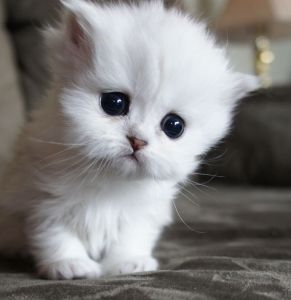

BELLA
Domestic Cat
2 years old
Distance 3.0km
Breed: Domestic Shorthair
Sex: Female
Age: 2 years old
Weight: 10 pounds

OLIVER
Domestic Cat
1.5 years old
Distance 4.0km
Breed: Persian
Sex: Male
Age: 1.5 years old
Weight: 12 pounds

LUCY
Domestic Cat
3 years old
Distance 2.5km
Breed: Maine Coon
Sex: Female
Age: 3 years old
Weight: 15 pounds

MAX
Domestic Cat
2 years old
Distance 3.5km
Breed: Siamese
Sex: Male
Age: 2 years old
Weight: 9 pounds